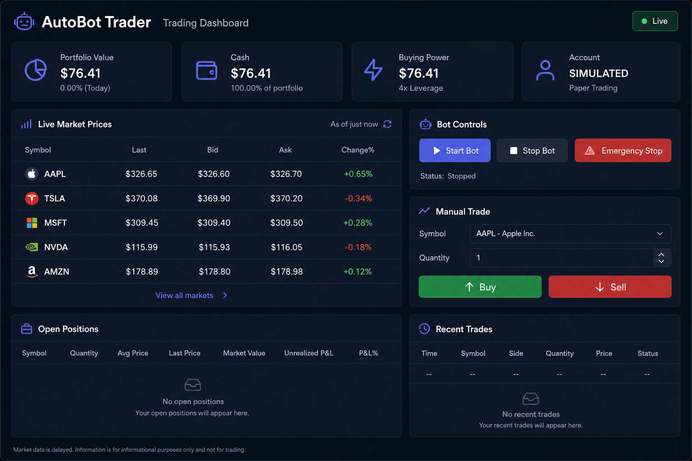
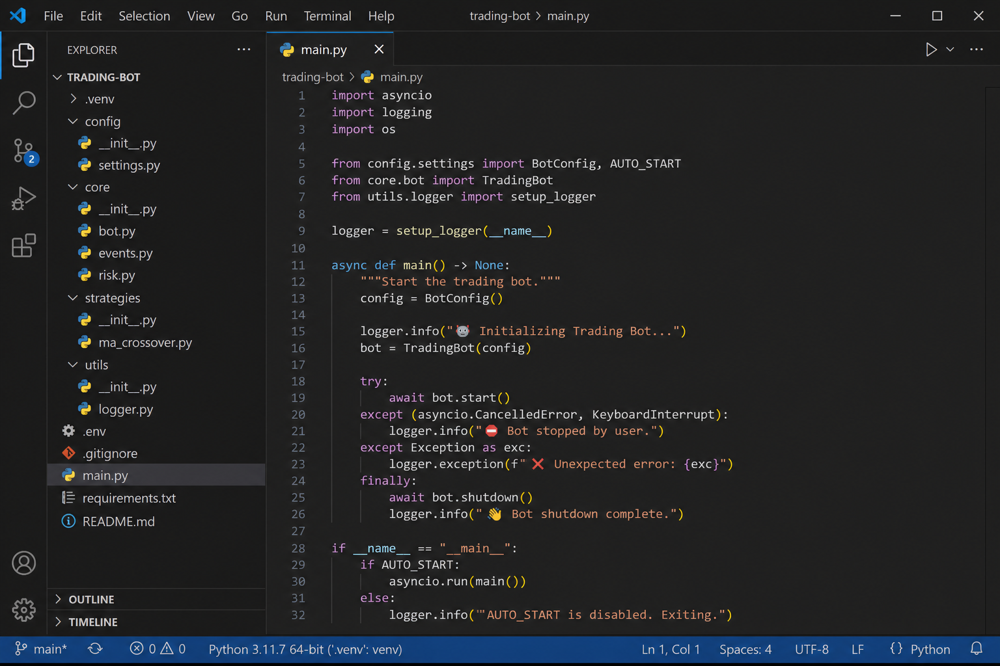

Project Completion Report — 30%+ Milestone Documentation
AI AutoBot Trader is an automated algorithmic trading system that processes live and historical market data, applies machine learning to predict short-term price direction, and executes trades through the Alpaca API. Unlike bots that rely only on static technical indicators, this system combines price action (RSI, MACD, ATR), news sentiment (Alpaca News + VADER), and macro mood (Kaggle-style CSV) to generate signals and dynamically size positions while managing risk with ATR trailing stop-losses.
Core capabilities implemented:
main.py → bot/trading_bot.py)| Feature / Task | Status | Completion |
|---|---|---|
| Project architecture & modular bot package | Complete | 95% |
| Alpaca REST data pipeline (historical OHLCV) | Complete | 90% |
| Live WebSocket streaming (bars/news) | Partial — REST fallback default | 70% |
| Technical indicators (RSI, MACD, ATR) | Complete | 90% |
| News sentiment (Alpaca NewsClient + VADER) | Complete | 85% |
| Macro sentiment (Kaggle CSV loader) | Complete | 80% |
| ML model training & inference | Complete | 85% |
| Dynamic allocation & order execution | Complete | 85% |
| ATR trailing stops & risk management | Complete | 85% |
| Auto-start autonomous trading loop | Complete | 90% |
| Streamlit dashboard UI | Complete | 85% |
| Live market prices (10s refresh) | Complete | 90% |
| Manual buy/sell from dashboard | Complete | 85% |
| Backtesting | Complete (custom loop) | 75% |
Integration tests (test_bot.py) | Complete | 80% |
| Crypto OHLCV support | Not started | 0% |
| Windows boot / cloud deployment | Not started | 10% |
Figure 1: Streamlit trading dashboard with live prices, bot controls, manual trade panel, positions, and recent trades.

Figure 2: Auto-start entry point — bot begins trading automatically when main.py launches.

Listing A: main.py — automatic trading startup
async def main() -> None:
config = BotConfig()
bot = TradingBot(config)
if config.auto_start:
write_flag(config.flag_file, "start")
await bot.start()
logger.info("[INFO] Auto-trading enabled — bot started automatically")
await bot.watch_flag()
Listing B: bot/trading_bot.py — execution loop (data → ML → order)
async def execution_tick(self, symbol: str, from_stream: bool = False) -> None:
sentiment, macro = self._combined_sentiment(symbol)
frame = await self.data_pipeline.fetch_bars(symbol)
bar_state = self.data_pipeline.latest_bar_state(frame, symbol, sentiment, macro)
signal = self.strategy_engine.evaluate(bar_state)
await self.execution_client.process_signal(signal, bar_state)
Listing C: dashboard_app.py — live market prices via Alpaca snapshots
@st.fragment(run_every=timedelta(seconds=10))
def render_live_prices() -> None:
frame = fetch_live_prices(_price_watchlist())
st.dataframe(frame, use_container_width=True)
USE_WEBSOCKET=false), using REST polling, and adding a circuit breaker to stop infinite reconnect loops.TimeInForce.DAY for fractional quantities.bot_control.flag with a BOM, causing start/stop commands to fail. Fixed with UTF-8-safe flag read/write utilities.indicators_ta.py.cd aiautobottrader pip install -r requirements.txt python train_model.py python main.py # auto-trading bot streamlit run dashboard_app.py # web dashboard python test_bot.py # smoke tests python backtest.py # historical simulation
To export this document as PDF: open this file in Chrome/Edge → Print → Save as PDF.